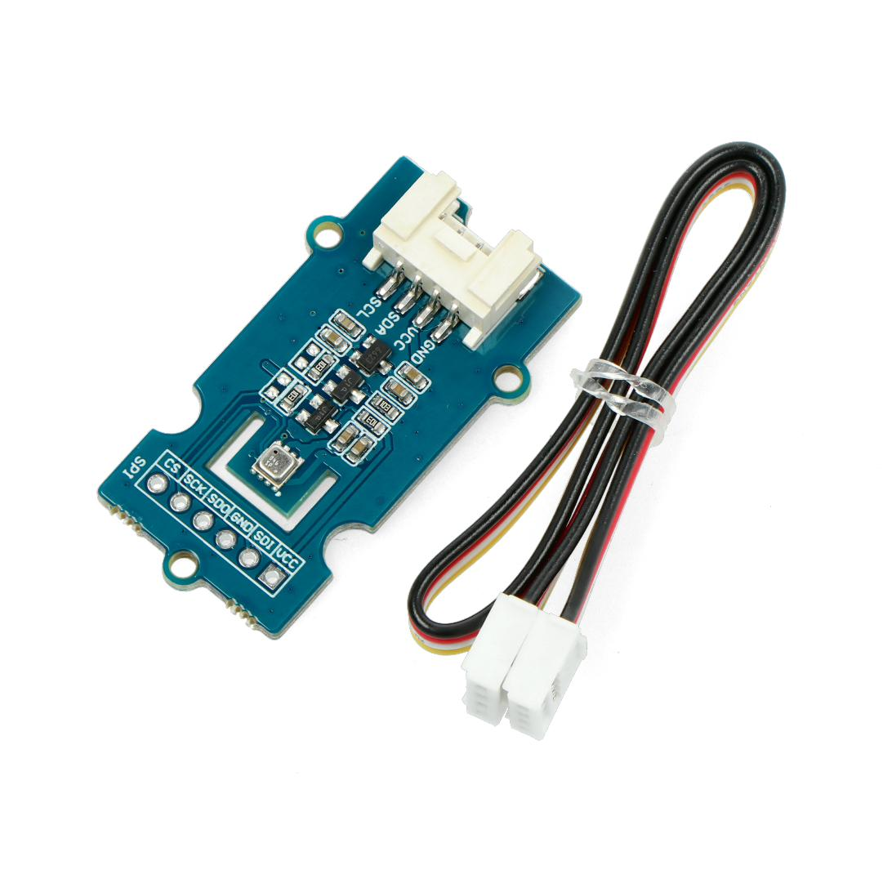

Man kann mit dem Alvik auf externe Messwerte auslesen über I2C. Hier am Beispiel des sehr genauen bme680. Verbinden Sie den Sensor mit dem i2C Connector am hinteren Teil des Alvik. Zuvor müssen sie jedoch die entsprechende Bibliothek bme680.py einspielen.

from machine import Pin, I2C
import bme680
import time
# I2C initialisieren (GPIO 12 = SCL, GPIO 11 = SDA)
i2c = I2C(0, scl=Pin(12), sda=Pin(11), freq=100000)
try:
# Sensor initialisieren
sensor = bme680.BME680_I2C(i2c=i2c, address=0x76) # Standardadresse ist 0x76
print("BME680 erfolgreich erkannt!")
except OSError:
print("Sensor nicht gefunden. Mögliche Ursachen:")
print("- Falsche I2C-Adresse (versuche address=0x77)")
print("- Defekte Verkabelung")
raise SystemExit
# Hauptschleife zum Lesen der Sensordaten
while True:
try:
# Temperatur auslesen
temperature = sensor.temperature
# Luftfeuchtigkeit auslesen
humidity = sensor.humidity
# Luftdruck auslesen
pressure = sensor.pressure
# Gaswiderstand auslesen (falls verfügbar)
gas_resistance = sensor.gas
# Ausgabe der Daten
print("\n--- Sensordaten ---")
print(f"Temperatur: {temperature:.2f} °C")
print(f"Luftfeuchtigkeit: {humidity:.2f} %")
print(f"Luftdruck: {pressure:.2f} hPa")
print(f"Gaswiderstand: {gas_resistance / 1000:.2f} kΩ")
print("-------------------")
except Exception as e:
print("Fehler beim Lesen der Sensordaten:", str(e))
time.sleep(5) # Wartezeit zwischen den Messungen